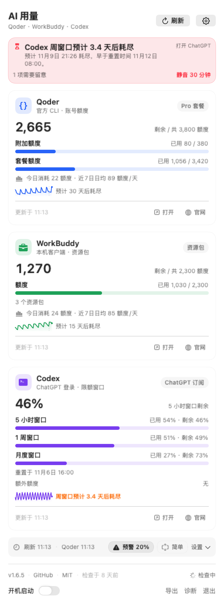
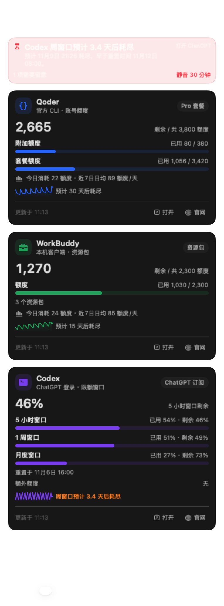

口径都不一样
一家按额度点数计、一家按资源包计、一家按 5 小时 / 周 / 月限额窗口计。把它们统一成「剩余额度 + 今日消耗 + 预计耗尽」三行，才谈得上比较。
macOS 菜单栏 · AI 用量仪表盘 · MIT 开源
Qoder、WorkBuddy、Codex 的余额、今日消耗、耗尽时刻，压缩成菜单栏上的一瞥。 每 5 分钟一次本机采样，按净日均消耗估算还能撑几天； 额度告急时菜单栏变色、面板摘要、系统通知三重提醒。数据全部留在本机，不读取任何登录凭据。
↑ 每 5 秒在「剩余」与「今日」之间滚动，两拍逐像素等宽，切拍时整行不呼吸
Qoder · WorkBuddy · Codex
为什么要做这个
想知道「今天还能放心写多久」，你原本得打开 A 的面板、点开 B 的官网、终端里再敲一遍 C 的命令。
一家按额度点数计、一家按资源包计、一家按 5 小时 / 周 / 月限额窗口计。把它们统一成「剩余额度 + 今日消耗 + 预计耗尽」三行，才谈得上比较。
系统通知被划走、被勿扰模式吞掉，等你发现时额度已经见底。TokenTool 把同一件事在菜单栏变色、面板顶部摘要、系统通知三处各说一遍。
官方页面只给剩余。TokenTool 用本机采样算今日消耗、昨天全天对比、近 7 日日均，并且把每天领取的额度剔除，不让「回补」假装成「省下来」。
支持范围
名称、口径、采集节奏、客户端与提醒全部收敛在同一份供应商描述符里，加一家不用再改四五处。
采集走官方 CLI 与本机通道，凭据只留在原处。
领取与过期都能被历史采样识别。
天级以上窗口只用近 7 天净日均外推。
功能详解
数字（完整数值）、紧凑（超千用 k）、条形（品牌色竖条 + 剩余比例），单选切换立即生效并本地保存。
每 5 秒在剩余量与今日消耗之间滚动，今日那拍带 ↓；两拍按实测像素补位，切拍时整行宽度不变。
卡片只留名称、套餐、主数值、一条进度条与今日消耗：2,665 ↘ 今日 22 · 昨天 94，一屏看完三件事。
今日消耗、昨天全天、近 7 日日均；领取与重置带来的增加不计入消耗，昨天没采满九成时不给参照。
按净日均消耗估算降到 0 的时刻；领取覆盖消耗时直接说「按当前节奏不会耗尽」，样本不足先积累。
菜单栏变色加图标（⚠ 红 / ＋ 橙）、新提醒闪动 60 秒、面板顶部关注摘要，通知被划走也不漏。
近 7 天剩余曲线，画剩余而不是已用，套餐总量变化不会造成假跳变；零基线与「今日」虚线对齐。
三家各给超时预算（Codex 70s / WorkBuddy 25s / Qoder 80s），一家卡住不影响另外两家，失败按指数退避重试。
历史文件损坏自动回退上一份备份并留证；采集输出按平台隔离解码，一家字段变化不会把三家一起打回不可解析。
每 24 小时检查 GitHub Releases，按芯片匹配 DMG，下载后按 SHA256SUMS 比对再打开；取不到校验值会明确标注。
一键导出近 14 天用量历史，便于离线分析与自建看板。
LSUIElement 常驻菜单栏，点开面板即展开，用完即收；三家显示可分别隐藏，全隐藏仍留一个 AI 入口。
最有意思的部分
每天领取的 100 额度会被剔除，否则「回补」会被当成省下来的用量，耗尽时间被算到下个世纪。
按相邻两次采样的剩余差值累计消耗；套餐总量变化或重置窗口不同的样本对直接跳过，跨零点那一对按落在昨天内的比例计入昨天。
「昨天 X」取昨天 00:00 → 今天 00:00 的整天消耗。用量按工作时段成片出现，同时段参照会在早上给出 今日 102 · 昨天 4 这种看着像坏数的数字。
Codex 的周、月度这类天级以上窗口只用近 7 天净日均；5 小时这类短窗口才叠加近 1 小时速率，再和重置时刻比较，给出「可撑到重置」或预计耗尽时刻。
三层可见性
低于阈值转红并加 ⚠，待领取转橙加 ＋，新提醒出现后闪动 60 秒，打开面板即停。
顶部一条关注摘要列出原因、预计耗尽时刻与「打开客户端」直达入口，通知被划走也看得到。
低额度、预计重置前耗尽、消耗突然加速三类本地通知，点击直接打开对应客户端；支持「今天不再提醒」与「静音 30 分钟」。
真实界面
以下截图由 1.6.5 版真实渲染管线在演示数据下生成，非设计稿。


边界
只走官方 CLI、本机 IPC 与 app-server；不做页面抓取，不逆向私有协议。
不读取、不复制、不输出 token / refresh token / 密码 / 邮箱 / UIN，登录状态由官方客户端自己维护。
用量缓存在 ~/Library/Application Support/TokenTool，历史保留 14 天，导出 CSV 由你主动触发。
只有版本检查会访问 GitHub Releases，用于读取最新标签与校验清单，不上传任何本地数据。
MIT 开源，采集脚本与界面同仓；面板里的「诊断」直接打开已脱敏的本地日志。
每个安装包都有 SHA-256，应用内更新会比对 SHA256SUMS 后才打开 DMG。
开始使用
ad-hoc 签名、未公证。首次打开被 Gatekeeper 拦截时：右键点 App →「打开」，或执行 xattr -dr com.apple.quarantine /Applications/TokenTool.app。
SHA256SUMS 校验清单 · 全部 Release · 源码仓库 · 问题反馈
迭代节奏
菜单栏切拍宽度固定到像素：空格补位改用 kern 补零头，两拍逐像素等宽。
单位名统一为「额度」，Qoder 的 Credits 与 WorkBuddy 的积分不再一家一个说法。
昨日参照改为昨天全天，覆盖判定改为累计可用样本对时长。
菜单栏在剩余量与今日消耗之间滚动，并按像素补位不跳位。
供应商行为收进一张注册表，加一家不用再改四五处。
常见问题
耗尽预测需要至少 6 小时的本机历史样本，刚装机或长时间合盖时先积累。这段时间卡片只显示剩余与今日消耗，不会给一个没依据的耗尽时刻。
昨天没采满九成（合盖、下午才开机、刚装机）时直接隐藏参照，而不是给一个偏小的数字误导对比。
是同一个东西。官方页面里 Qoder 写作 Credits、WorkBuddy 写作积分，面板统一显示为「额度」，避免同一个数字出现两种叫法；数值本身不做任何换算。
不会。采集只走官方 CLI、本机 IPC 与 app-server 的用量输出，代码里没有任何读取或输出 token、密码、邮箱、UIN 的路径；诊断日志同样脱敏。
不需要。安装包是可直接运行的 App，拖进「应用程序」即可；只有你自己构建时才需要命令行工具（纯 swiftc 构建，无 Xcode 工程）。
Release 下有 SHA256SUMS，应用内更新下载完成后会自动比对并只在通过时打开 DMG；手动下载可以用 shasum -a 256 -c SHA256SUMS 复验。
没有 Dock 图标，没有后台窗口，没有账号体系。它只是在你扫一眼菜单栏的时候，把三个平台的答案一起给你。